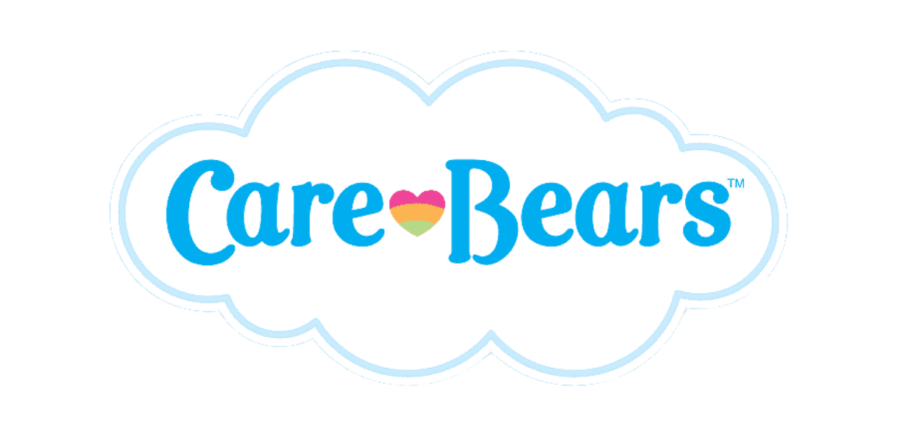
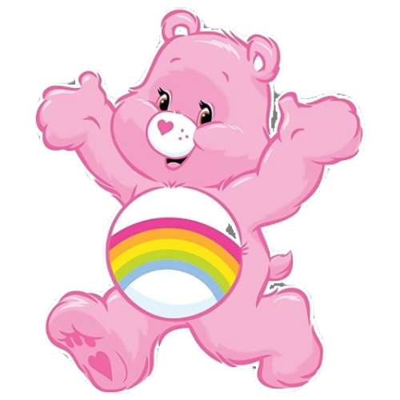
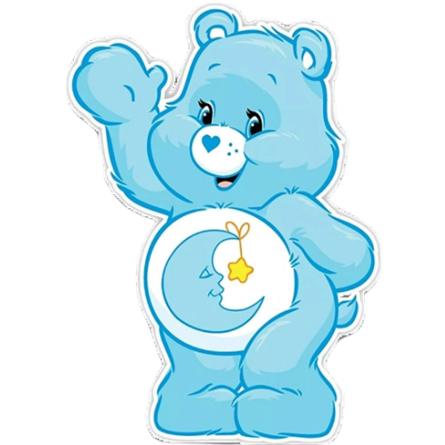
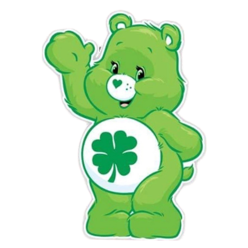
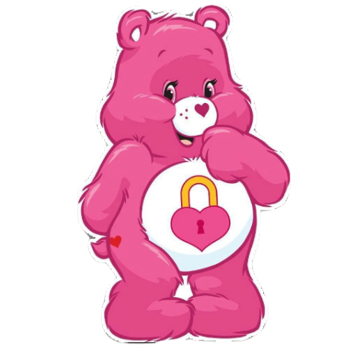
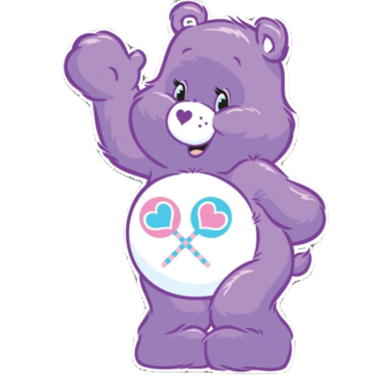
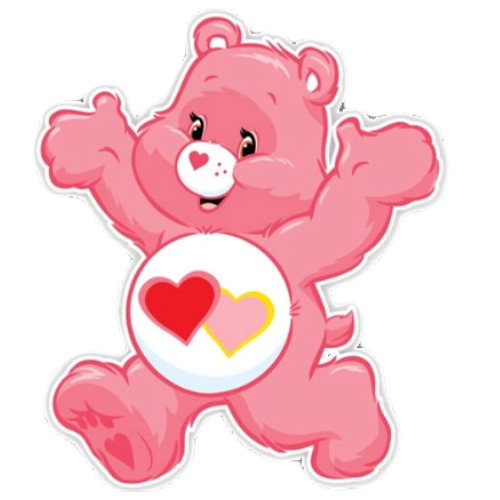

Página de personagens
Conheça os Ursinhos Carinhosos!
Cada um com uma personalidade, uma cor, e um símbolo especial na barriguinha.

Ursinhos Carinhosos
|
Ursinhos|
CuriosidadesPágina de personagens
Cada um com uma personalidade, uma cor, e um símbolo especial na barriguinha.
Personagens principais

Espalha sorrisos e pensamentos positivos.

Cuida dos sonhos e traz noites tranquilas.

Torna cada comemoração ainda mais especial.

Sempre pronto para trazer diversão e energia.

Espalha sorte e boas oportunidades por onde passa.

Reclama bastante, mas tem um coração enorme.

Incentiva a paz, a união e a amizade.

Guarda sentimentos e segredos com carinho.

Compartilhar sempre torna tudo mais especial.

Espalha amor, carinho e compreensão.

Sempre acredita que sonhos podem se tornar realidade.

Um amigo que está ao seu lado em todos os momentos.

Compartilha muito amor, carinho e amizade.

Comete alguns errinhos, mas nunca perde o encanto.

Espalha gargalhadas e diversão por onde passa.

Sempre ao seu lado, torna cada momento mais especial.